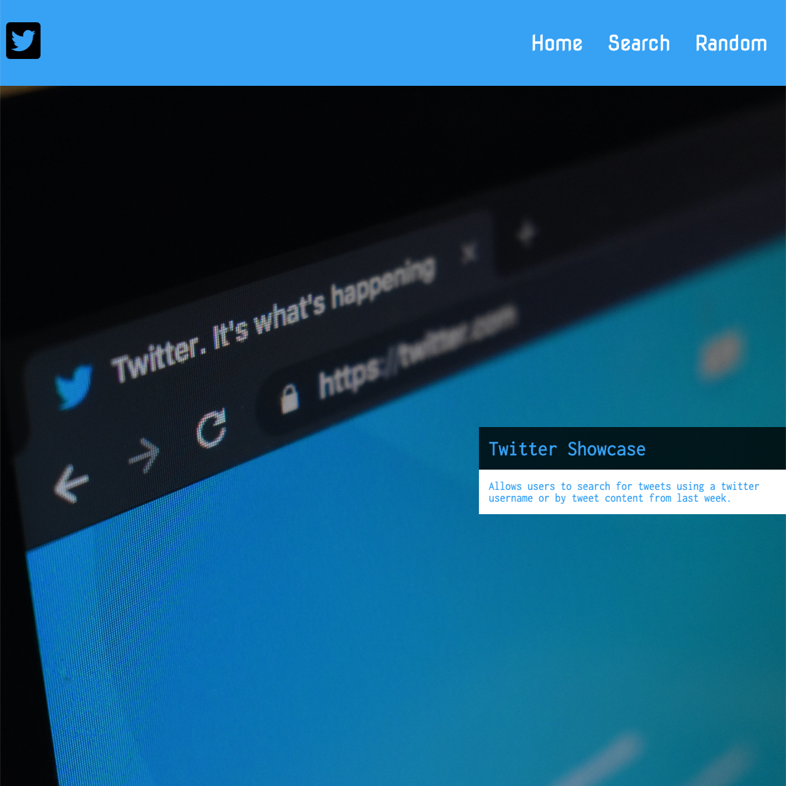

Twitter Showcase
This is fun web application that utilizes data from the Twitter's API to allow a person to search for recent tweets of Twitter users.
This application was a lot of fun to build. It challenged my in many ways. I'm so glad I was able to complete this challenge as it taught me a ton and leveled up my skills that much more. I learned how to work with APIs. How to connect client-side with server-side as well as connecting to external APIs.
I ran into many small bugs that allowed me to come up with creative solutions to fix. I learned a lot about React-Router and React Hooks, and I was able to implement both in this project. I learned more about CSS grid and flexbox. Thus, as a result the application is fully responsive. As a I continue to learn, it would be so much fun to continue to grow this application and add features to it in the future.
Visit Website